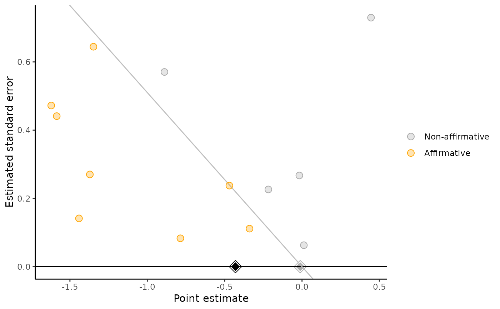

Creates a modified funnel plot that distinguishes between affirmative and
nonaffirmative studies, helping to detect the extent to which the
nonaffirmative studies' point estimates are systematically smaller than the
entire set of point estimates. The estimate among only nonaffirmative studies
(gray diamond) represents a corrected estimate under worst-case publication
bias. If the gray diamond represents a negligible effect size or if it is
much smaller than the pooled estimate among all studies (black diamond), this
suggests that the meta-analysis may not be robust to extreme publication
bias. Numerical sensitivity analyses (via pubbias_svalue()) should still be
carried out for more precise quantitative conclusions.
Arguments
- yi
A vector of point estimates to be meta-analyzed.
- vi
A vector of estimated variances (i.e., squared standard errors) for the point estimates.
- sei
A vector of estimated standard errors for the point estimates. (Only one of
viorseineeds to be specified).- favor_positive
TRUEif publication bias are assumed to favor significant positive estimates;FALSEif assumed to favor significant negative estimates.- alpha_select
Alpha level at which an estimate's probability of being favored by publication bias is assumed to change (i.e., the threshold at which study investigators, journal editors, etc., consider an estimate to be significant).
- plot_pooled
Should the pooled estimates within all studies and within only the nonaffirmative studies be plotted as well?
- est_all
Regular meta-analytic estimate among all studies (optional).
- est_worst
Worst-case meta-analytic estimate among only nonaffirmative studies (optional).
- xmin
x-axis (point estimate) lower limit for plot.
- xmax
x-axis (point estimate) upper limit for plot.
- ymin
y-axis (standard error) lower limit for plot.
- ymax
y-axis (standard error) upper limit for plot.
- xlab
Label for x-axis (point estimate).
- ylab
Label for y-axis (standard error).
Details
By default (plot_pooled = TRUE), also plots the pooled point
estimate within all studies, supplied by the user as est_all (black
diamond), and within only the nonaffirmative studies, supplied by the user
as est_worst (gray diamond). The user can calculate est_all and
est_worst using their choice of meta-analysis model. If instead these
are not supplied but plot_pooled = TRUE, these pooled estimates will
be automatically calculated using a fixed-effects (a.k.a. "common-effect")
model.
References
Mathur MB, VanderWeele TJ (2020). “Sensitivity analysis for publication bias in meta-analyses.” Journal of the Royal Statistical Society: Series C (Applied Statistics), 69(5), 1091--1119.
Examples
##### Make Significance Funnel #####
# compute meta-analytic effect sizes for an example dataset
require(metafor)
dat <- metafor::escalc(measure = "RR", ai = tpos, bi = tneg, ci = cpos,
di = cneg, data = dat.bcg)
# favor_positive = FALSE since we think publication bias is in favor of negative
significance_funnel(yi = dat$yi, vi = dat$vi, favor_positive = FALSE)
